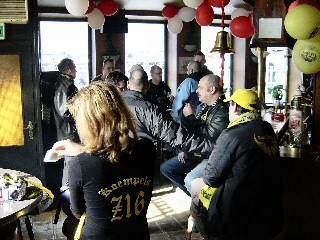
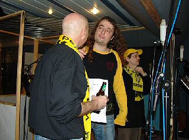
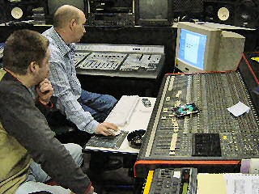
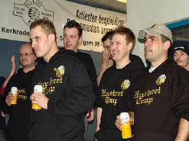
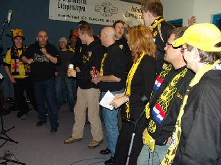
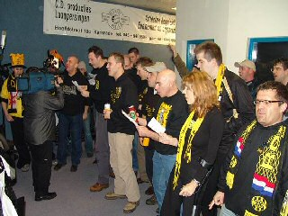
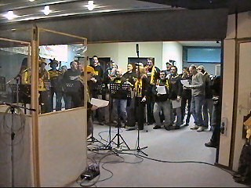
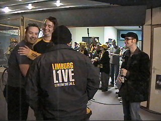

|
Opname Rodasong (take 1) 28 februari 2004 |

Om 14.00 uur waren de meeste Rodasangerknaben
al bijeen in café "Citycorner".

Vervolgens ging de groep naar studio "Eurode"
alwaar Dogman, Mark tekst en uitleg gaf.

Vanachter het regelpaneel klonk de Rodasong
indrukwekkend.

De Alfa-hulp was ook aanwezig.

De opnamen waren super gezellig en behalve de
Rodasong weerklonk ongeveer het gehele oeuvre
van Roda variërend van het Limburgs volkslied
tot "Izzy is een clubmongool"......

L1 kwam TV-opnamen maken. Volgende week
volgt er een tweede take, maar dan met spelers
van het eerste elftal erbij. De beelden van beide
sessies komen over ongeveer twee weken op
L1 TV in het programma SV Limburg Sport.

We wanna hear We wanna see We wanna scream

FORZA RODA !!
Meer foto's op RodaWorld, Rodajcfans en
op
de Hanebretboys.
© Koempels
Pleasure Dome